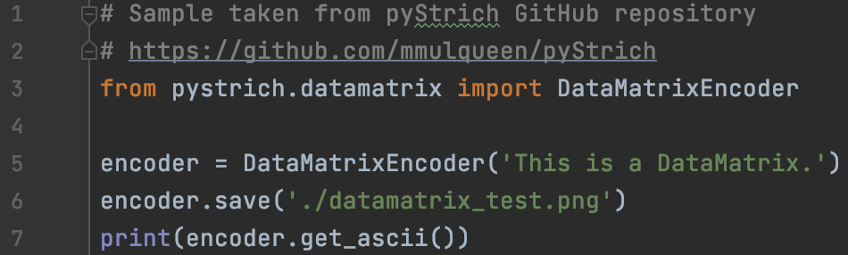
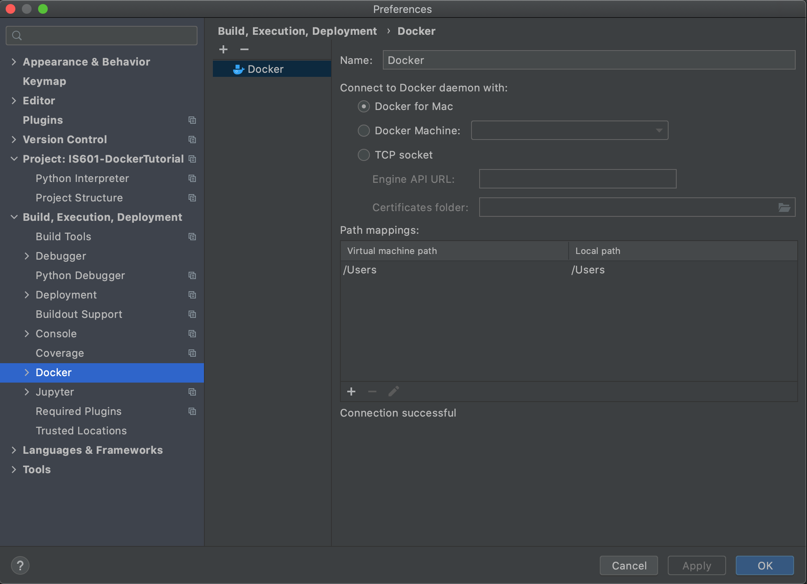
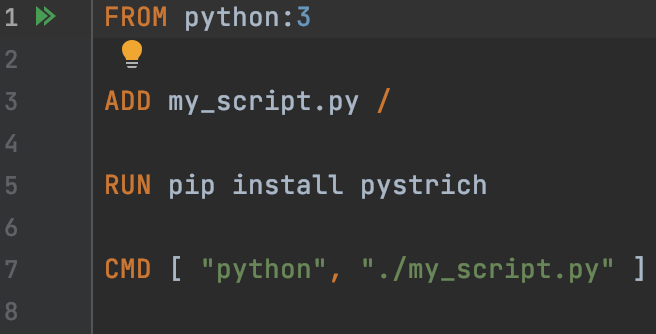
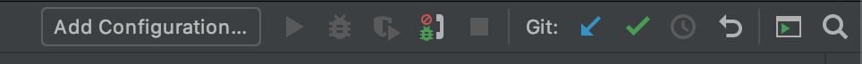
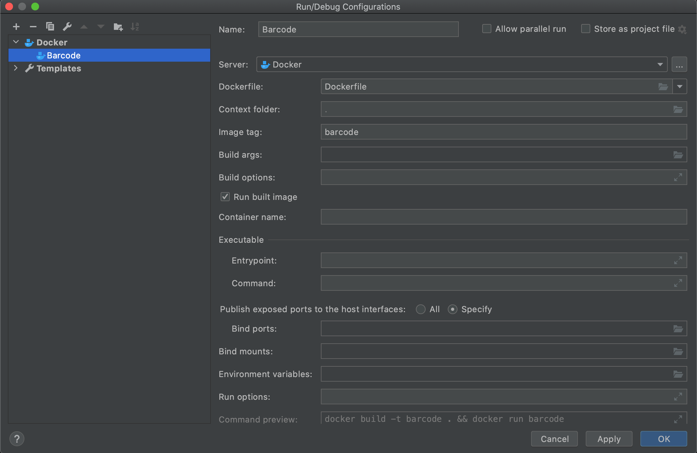
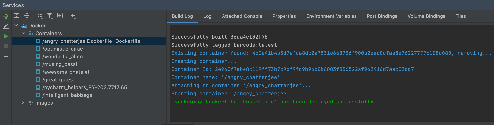

This is a quick tutorial about how to connect Docker with Pycharm and start developing your own containerized python project!
Create a Python project named BarcodeTutorial. Then create a new file called my_script.py in as new directory called src. Enter the following code:
Docker in Pycharm needs to be setup now. Go to the Settings/Preferences of Pycharm and go to Build, Execution, Deployment. Click on Docker
Create a new file in the main project directory and name it Dockerfile. Put the following codes into the Dockerfile:
To run the container, at the top-right corner click on the Add Configuration ... button
Change the container name and the image name in this page
When the process is running, Pycharm will create the Run tab for run process. The Build log and Attached Console will show relevant output from the container. The Build logs the information for building the image and running the container. The Attached Console shows you the results of running the python code.
